01
Buka project Anda
Beranda project menampilkan semua survei, respons hari ini dan minggu ini, hal yang perlu diperhatikan, dan tren respons. Survei baru dimulai dari sini, dari nol atau dari template.
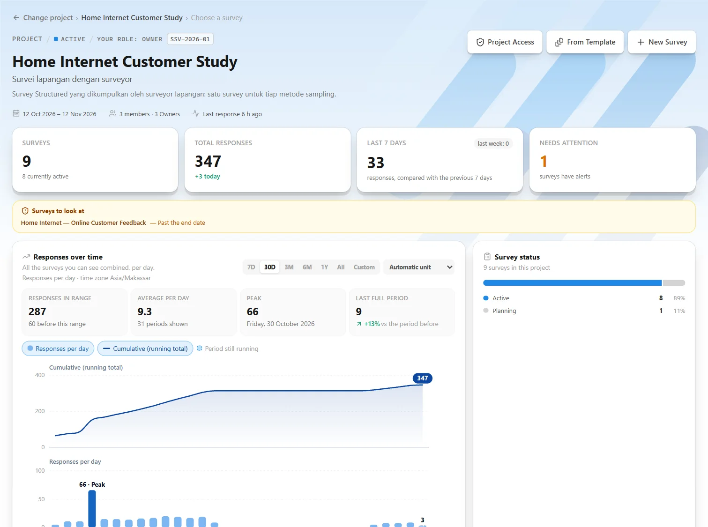
Tentang platform · Panduan belajar
Semua yang dikerjakan GatherInsight, dijelaskan dengan layar aslinya: jenis survei, setiap menu, metode di balik angka, dan siapa mengerjakan apa. Baca dari atas, atau langsung masuk dari sudut yang Anda perlukan.
Setiap screenshot adalah layar asli aplikasi, berisi data demo.
Mulai di sini
Enam konsep menjelaskan hampir setiap layar. Pahami sekali, dan sisa platform terbaca dengan sendirinya.
Wadah untuk satu klien atau satu program studi: tim, timeline, survei, dan laporannya. Setiap orang diundang per project, dengan perannya.
Satu kuesioner beserta respondennya. Satu project bisa berisi survei sebanyak yang diperlukan; masing-masing punya workspace dan menu sendiri.
Basic adalah template siap pakai — NPS, CSAT, CES, kustom, atau suara — dibagikan lewat tautan, kode QR, atau daftar telepon. Advanced menambah desain sampling, kerangka sampel, kuota, tim lapangan, dan bobot.
Cara jawaban masuk: tautan web, aplikasi surveyor tatap muka, panggilan telepon, rekaman suara, atau formulir kertas yang diketik belakangan. Semua kanal masuk ke hasil yang sama.
Setiap jawaban membawa buktinya: siapa yang memberi, di mana dan kapan, berapa lama, apa yang terucap di rekaman, dan skor kepercayaan.
Studi yang diulang tiap satu atau dua tahun tetap satu survei dengan beberapa gelombang, sehingga pertanyaannya bisa diikuti dan dibandingkan dari waktu ke waktu.
01
Beranda project menampilkan semua survei, respons hari ini dan minggu ini, hal yang perlu diperhatikan, dan tren respons. Survei baru dimulai dari sini, dari nol atau dari template.

02
Bagian, blok, dan 60 tipe pertanyaan dalam satu kanvas, dengan logika yang melewati atau memunculkan pertanyaan dan skor kualitas untuk setiap pertanyaan.
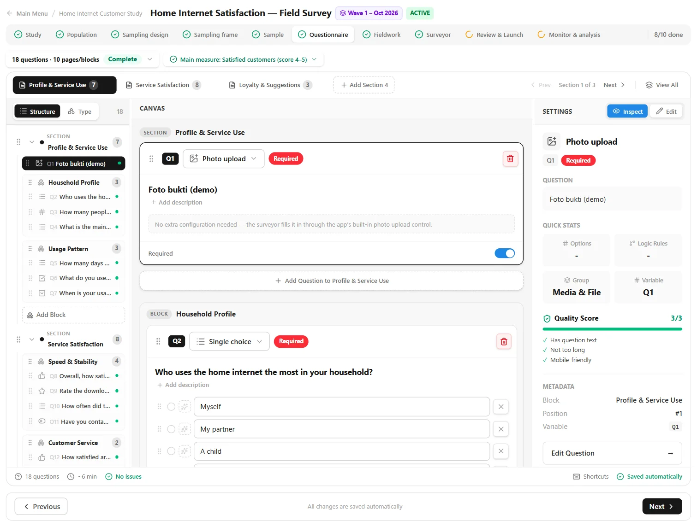
03
Terbitkan tautan atau kode QR, atur siapa yang boleh menjawab dan berapa kali, serta kapan tautan ditutup. Survei lapangan dan telepon membagikan penugasan.

04
Overview survei menunjukkan progres terhadap target, laju, perkiraan tanggal selesai, kualitas data, dan langkah berikutnya.
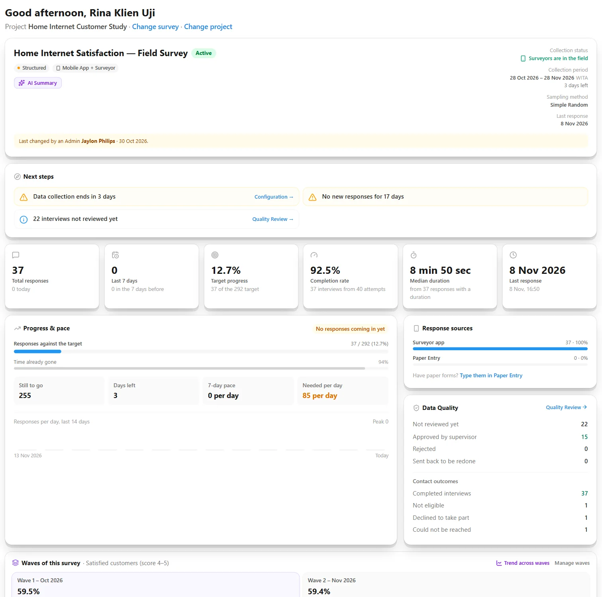
05
Skor, grafik per pertanyaan, perbandingan per kelompok dan periode, ringkasan AI yang angkanya dicek, serta laporan dan ekspor.

Per jenis survei
Setiap jenis survei dijelaskan layar demi layar, sesuai urutan pemakaiannya. Pilih yang paling dekat dengan studi Anda.
Pakai saat Survei pelanggan atau warga yang perlu jalan hari ini: NPS, CSAT, CES, atau formulir singkat buatan sendiri.
01
Dashboard template dibuka dengan skornya, komposisi promoter, passive, dan detractor, serta trennya dari waktu ke waktu.
02
Sebaran skor lengkap dan skor per segmen — paket, cabang, wilayah — sehingga kelompok yang lemah langsung terlihat.

03
Setiap respons sebagai satu baris dengan skor, waktu, dan kanalnya; saring berdasarkan jawaban mana pun dan buka catatan lengkapnya.
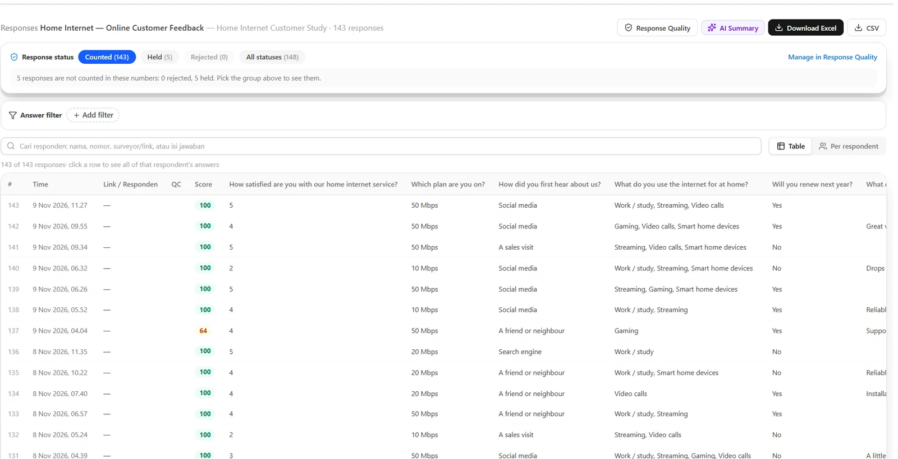
04
Skor kepercayaan untuk setiap respons; yang meragukan menunggu di antrean tinjauan dan bisa ditahan dari hasil sampai ada yang menyetujui.

05
Dengan halaman lokasi opsional, setiap respons tampil di peta, dengan skor sebagai warnanya.
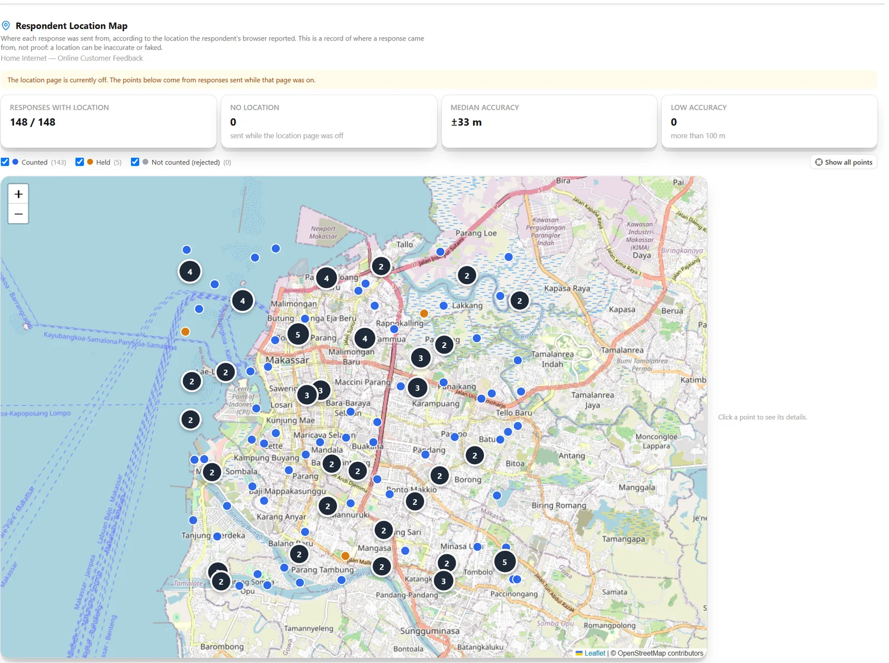
06
Komentar terbuka terbaru, dan kartu untuk setiap pertanyaan lain di survei.

Pakai saat Studi yang angkanya harus bisa dipertanggungjawabkan: populasi yang jelas, sampel ditarik dari kerangka, target, dan margin of error.
01
Tulis siapa yang diteliti dan syarat yang harus dipenuhi responden; syarat itu menjadi pertanyaan penyaringan.
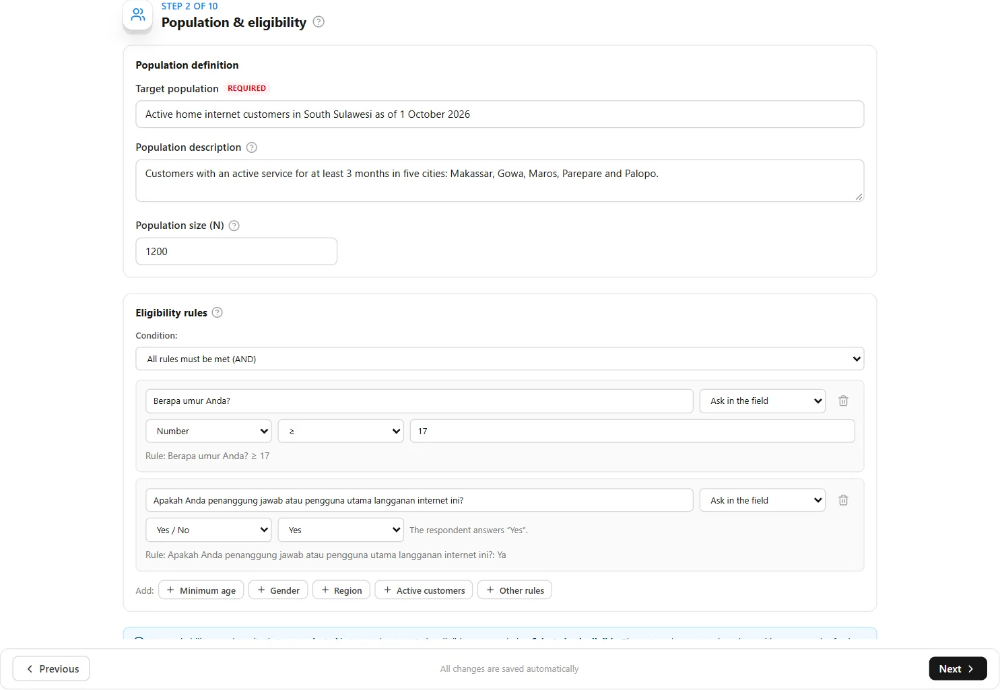
02
Tujuh desain: acak sederhana, sistematis, stratifikasi, PPS, klaster, bertahap, atau kuota — masing-masing dengan kebutuhan dan hasilnya.
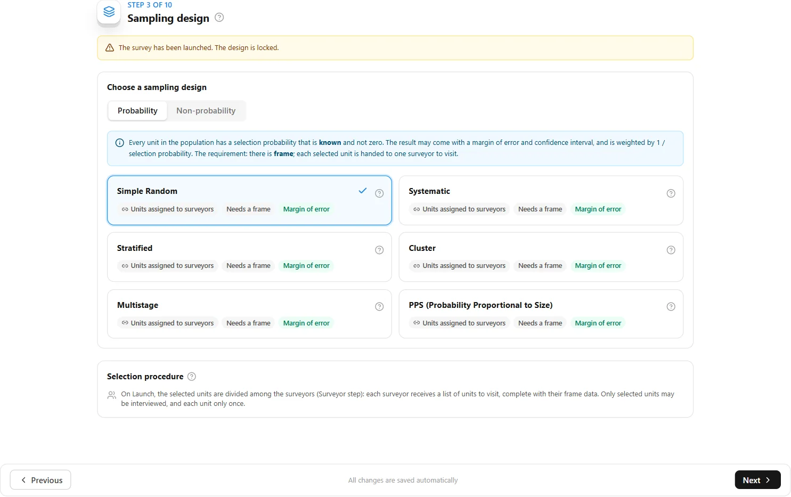
03
Daftar unit yang akan ditarik, dicek baris kosong, duplikat, dan cakupannya sebelum penarikan.
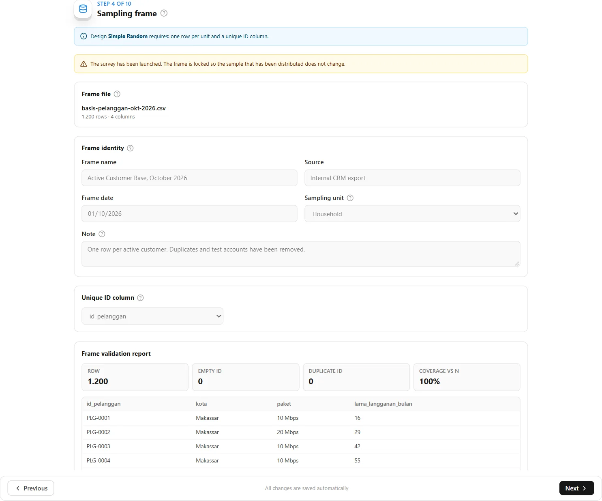
04
Ukuran sampel dihitung dari tingkat kepercayaan, margin of error, design effect, dan respons yang diharapkan; penarikan memakai seed yang dicatat, sehingga bisa diulang.
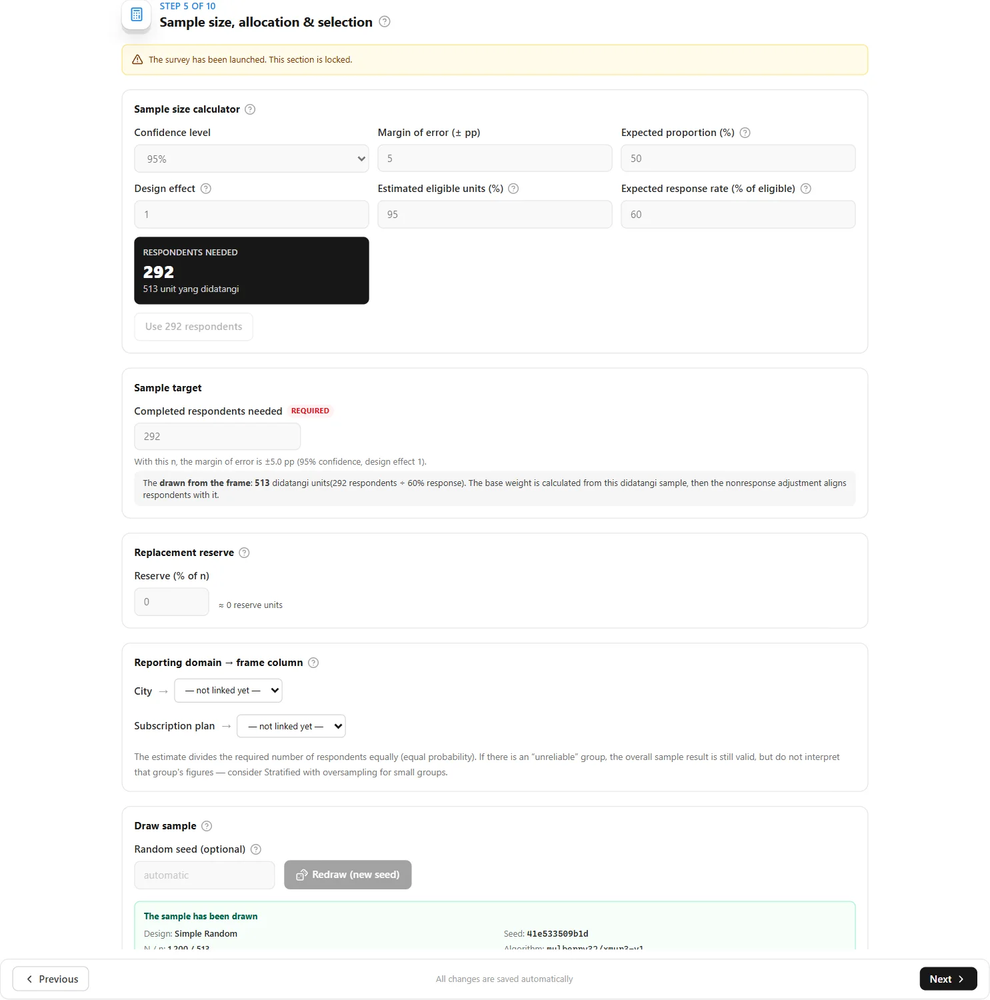
05
Waktu minimum, attention check, aturan konsistensi, ambang skor kepercayaan, dan apakah respons meragukan ditahan.

06
Seperti apa yang normal untuk survei ini, sebaran skor kepercayaan, dan antrean respons yang perlu dilihat.
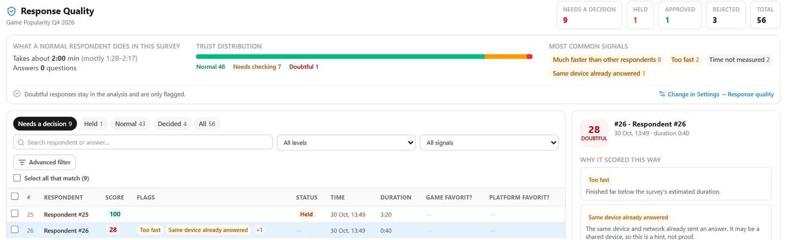
07
Analytics: respons per hari dibanding rencana, waktu pengisian, titik berhenti, kanal, dan corong dari undangan sampai respons selesai.
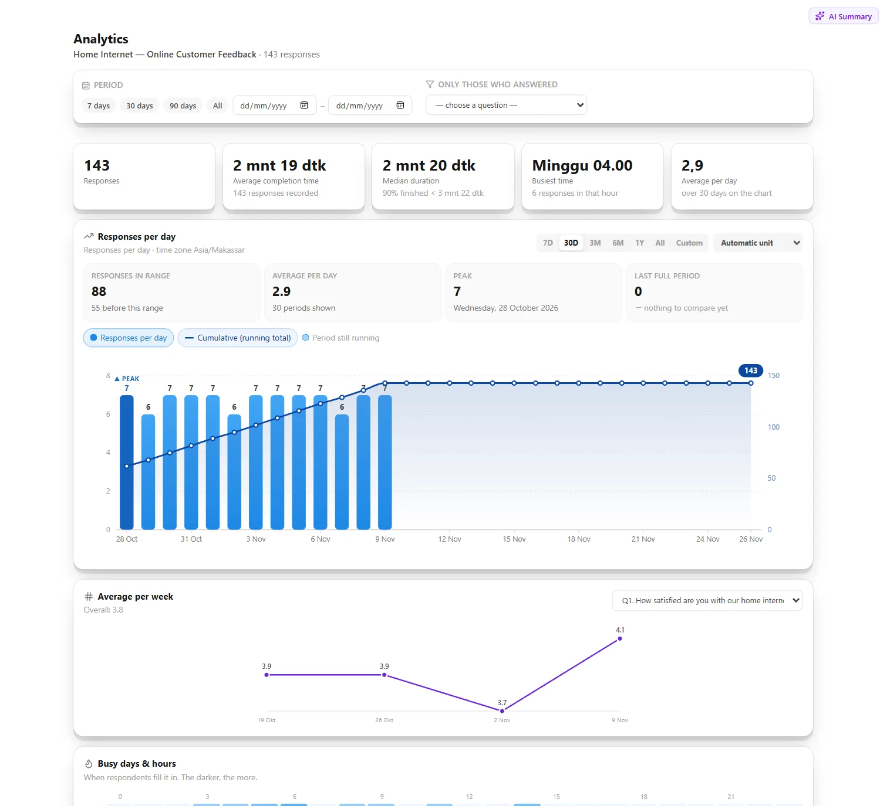
08
Insights mengumpulkan temuan aturan — laju di bawah target, respons rendah di satu strata, margin terlalu lebar — dengan ringkasan AI di atasnya.
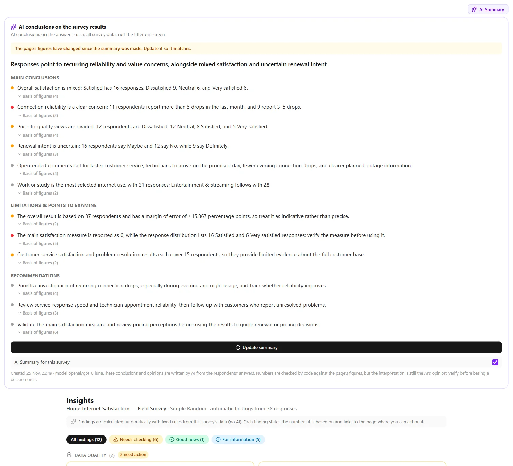
Pakai saat Wawancara di rumah, toko, atau kantor, oleh tim yang perlu Anda lihat dan percaya.
01
Tambahkan surveyor — internal, atau eksternal dengan tanggal akses berakhir — dan bagi sampel di antara mereka per area atau per jumlah.
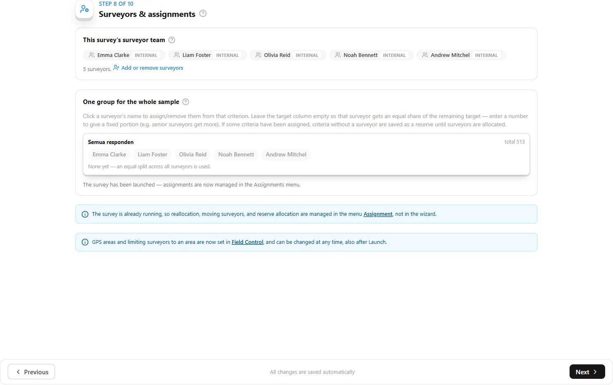
02
Penugasan menunjukkan siapa memegang bagian sampel yang mana dan berapa yang selesai; pekerjaan bisa dipindah selama lapangan berjalan.

03
Ambil posisi di awal setiap wawancara, atau ikuti rute selama aplikasi terbuka; gambar area tempat surveyor harus berada.

04
Surveyor memasang aplikasi Study & Research dari satu halaman; aplikasi bekerja tanpa sinyal dan tersinkron saat ada sinyal.
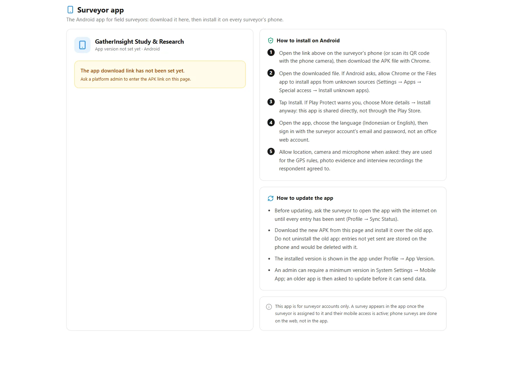
05
Live Map menunjukkan posisi terakhir, jejak, dan wawancara setiap surveyor, dengan statusnya: aktif, terlambat, atau offline.
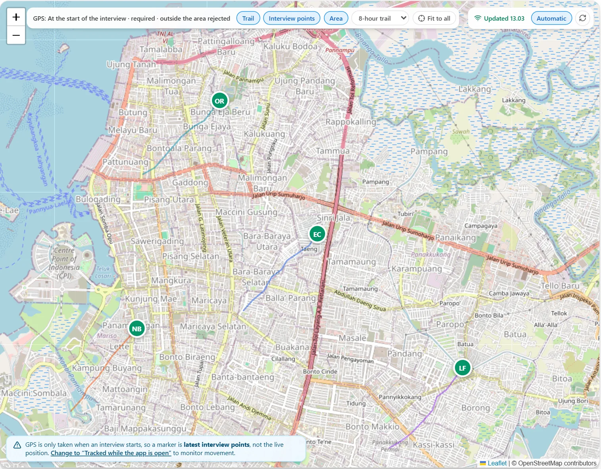
06
Riwayat Rute memutar ulang hari seorang surveyor: ke mana pergi, di mana berhenti, wawancara mana di perhentian mana.

07
Review Kualitas mengurutkan wawancara menurut kecurigaan — waktu mustahil, titik sama, jawaban identik — dan membandingkan jawaban yang diisi dengan rekamannya.

08
Hasil, lama wawancara, tanda, dan skor kualitas per surveyor, dengan perhitungan honor opsional.

09
Peta Response mewarnai setiap kunjungan menurut hasilnya: wawancara, menolak, tidak di rumah, tidak memenuhi syarat.

10
Laporan kendala dari aplikasi, balasannya, dan pengumuman ke seluruh tim, dengan tanda sudah dibaca.
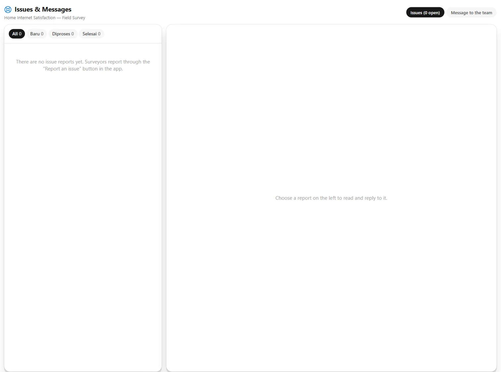
Pakai saat Responden yang bisa dihubungi lewat telepon, dengan persetujuan direkam dan setiap percobaan dihitung.
01
Pernyataan persetujuan yang dibacakan penelepon, jam menelepon, dan instruksi yang tampil di samping kuesioner.

02
Konsol Telepon menampilkan siapa yang ditelepon berikutnya dan panggilan terbaru; setiap percobaan dicatat dengan hasilnya.

03
Kuesioner dengan instruksi kantor di sampingnya; panggilan direkam setelah ada persetujuan.

04
Respons menampilkan penelepon dan nomornya; percobaan masuk ke tingkat kontak dan kerja sama.
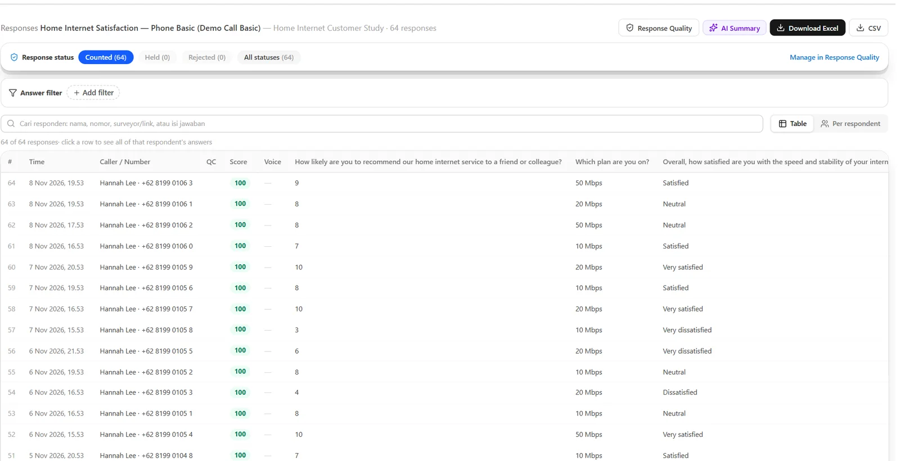
05
AI check mencatat apa yang diucapkan responden untuk setiap pertanyaan dan menandai yang cocok, tidak cocok, dan yang perlu didengar ulang.
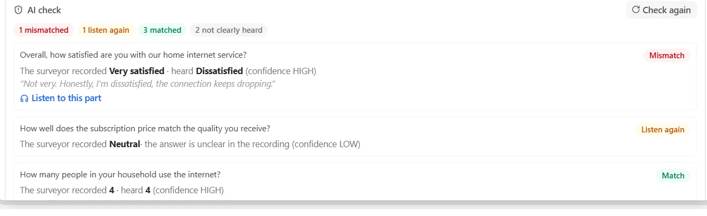
Pakai saat Saat orang lebih banyak bicara daripada mengetik: cerita pelanggan, masukan layanan, wawancara terbuka dalam jumlah besar.
01
Bahasa, durasi maksimum, pilihan mengetik, berapa lama rekaman disimpan, dan teks persetujuan.

02
Rekaman dan transkrip berdampingan, dengan kata yang sering muncul dan tingkat keyakinan setiap transkrip.

03
Setiap kartu pertanyaan menampilkan versi AI singkat dari apa yang dikatakan orang, dengan tombol kembali ke transkrip.
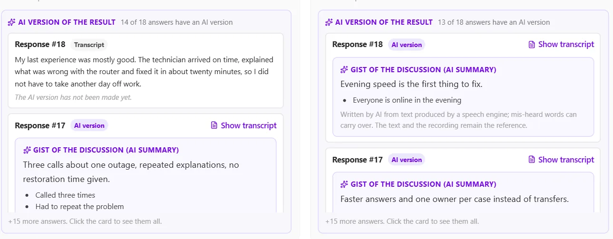
04
Setiap teks AI diberi label; transkrip dan rekaman tetap menjadi sumbernya.
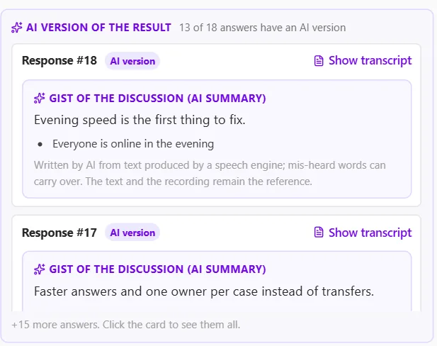
Pakai saat Studi pelacakan yang diulang tiap satu atau dua tahun, ketika pertanyaannya adalah apa yang berubah.
01
Dari dalam survei: kuesioner, logika, desain, dan tim tersalin; gelombang panel memakai responden sebelumnya sebagai kerangka sampel.
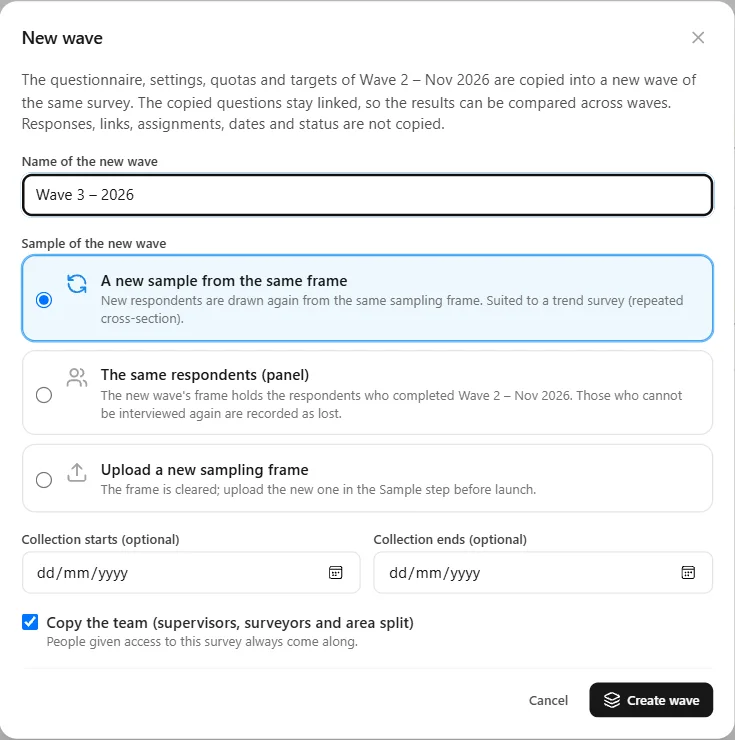
02
Setiap gelombang dengan tanggal, sampel, dan progresnya; pengalih di bilah atas berpindah di antaranya.
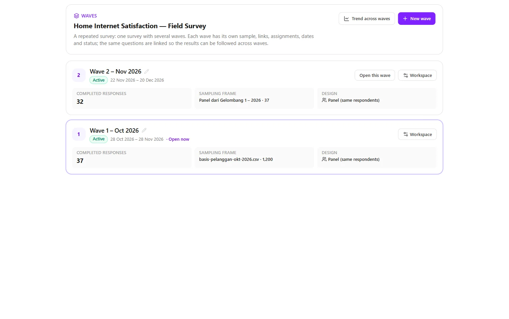
03
Setiap pertanyaan yang dilacak gelombang demi gelombang, berbobot bila gelombangnya berbobot, dengan perubahannya diuji signifikansinya.

04
Semua gelombang dalam satu file, atau feed OData langsung untuk Power BI, Tableau, dan Excel dengan kolom gelombang.

Per tahapan
Delapan tahap, sesuai urutan angka saling bergantung. Chip melompat ke penjelasan setiap menu.
Basic · Advanced
Buat project, undang tim dengan perannya, perkirakan ukuran sampel, hari lapangan, dan biaya, lalu letakkan setiap survei di satu timeline.
Menu yang dipakai
Advanced
Tentukan apa yang harus diestimasi, gambarkan populasi, pilih desain sampling, unggah kerangka, tentukan ukuran dan tarik sampel; atur kuota dan cadangan.
Menu yang dipakai
Basic · Advanced
60 tipe pertanyaan dengan logika, halaman sambutan, persetujuan, lokasi, dan konfirmasi; versi tersimpan, komentar, dan persetujuan klien.
Menu yang dipakai
Basic · Advanced
Surveyor dan penugasan, aturan GPS dan area, pengaturan telepon, mode tautan, batas, dan akses.
Menu yang dipakai
Basic · Advanced
Pemeriksaan peluncuran menolak memulai selama masih ada masalah; jawaban masuk dari tautan, aplikasi, telepon, suara, dan kertas.
Menu yang dipakai
Basic · Advanced
Progres dan laju, prakiraan tanggal selesai, Live Map, peringatan dan pesan, skor kepercayaan, dan antrean tinjauan.
Menu yang dipakai
Advanced
Setiap respons meragukan diputuskan oleh orang; bobot untuk sampel probabilitas; jawaban terbuka di-coding menjadi kategori.
Menu yang dipakai
Basic · Advanced
Hasil per pertanyaan, analisa mendalam, perbandingan dan benchmark, tren antar gelombang, ringkasan AI, laporan, dan ekspor.
Menu yang dipakai
Per peran
Akses diberikan per project dan per peran, sehingga setiap orang melihat menu yang dibutuhkan pekerjaannya.
Menjalankan studi
Membuat project dan survei, merancang kuesioner dan sampel, menjalankan lapangan, memutuskan jawaban meragukan, dan melapor. Setiap perubahan tercatat di log audit.
Biasa memakai
Membaca dan menyetujui
Diundang ke project untuk mengikutinya: hasil, analisis, dan laporan, plus tinjauan kuesioner untuk memberi komentar dan menyetujui versi.
Biasa memakai
Menjalankan lapangan sehari-hari
Dibuka dengan halaman 'Hari ini', lalu menu lapangan: penugasan, live map, review kualitas, peringatan, dan pesan untuk survei yang diawasi.
Biasa memakai
Mengumpulkan jawaban
Internal, atau eksternal dengan tanggal akhir. Bekerja hanya di aplikasi ponsel, pada penugasan yang diberikan.
Biasa memakai
Menjalankan platform
Pengguna, pengaturan AI, integrasi, dan status sistem. Bisa membuka survei mana pun sebagai owner-nya; aksesnya ditampilkan dan diaudit.
Biasa memakai
Metodologi
Setiap angka di layar punya metode di baliknya. Berikut yang utama; semuanya dihitung oleh platform sendiri, dengan nilai default, ukuran minimum, dan pembulatan yang tercatat.
Kapan Daftar lengkap tanpa kelompok yang harus dijamin.
Caranya Setiap unit punya peluang sama n/N; pengacakan dengan seed memilihnya.
Kapan Daftar dengan urutan bermakna — per area atau ukuran — untuk sebaran implisit.
Caranya Setiap unit ke-k dari titik awal acak, dengan interval pecahan N/n.
Kapan Kelompok yang masing-masing harus terwakili, mis. setiap wilayah.
Caranya Alokasi proporsional, sama, atau kustom; penarikan acak di dalam setiap strata.
Kapan Unit dengan ukuran sangat berbeda, seperti desa atau sekolah.
Caranya Peluang sebanding ukuran; unit sangat besar diambil pasti.
Kapan Biaya perjalanan lebih penting dari sebaran: kunjungi seluruh area.
Caranya Tarik klaster, lalu wawancarai sejumlah unit tetap di masing-masing.
Kapan Tidak ada daftar rumah tangga, hanya daftar area.
Caranya Hingga tiga tahap; rumah tangga didata di lapangan, lalu ditarik server.
Kapan Kecepatan penting dan porsi kelompok utama diketahui.
Caranya Hingga tiga dimensi; sel penuh menolak atau overflow.
Kapan Masukan dari siapa pun yang datang, tanpa klaim mewakili populasi.
Caranya Tanpa kerangka; batas per kanal dan skor kepercayaan menjaganya tetap bersih.
Jumlah wawancara selesai yang diperlukan berasal dari tingkat kepercayaan, margin of error, proporsi yang diharapkan, dan ukuran populasi, lalu bertambah dengan design effect; undangan dibagi dengan respons dan kelayakan yang diharapkan.
Bobot dasar dari peluang terpilih; penyesuaian agar responden menanggung non-responden di kelasnya; raking ke porsi yang diketahui; trimming bobot ekstrem. Biaya pembobotan dilaporkan sebagai effective sample size.
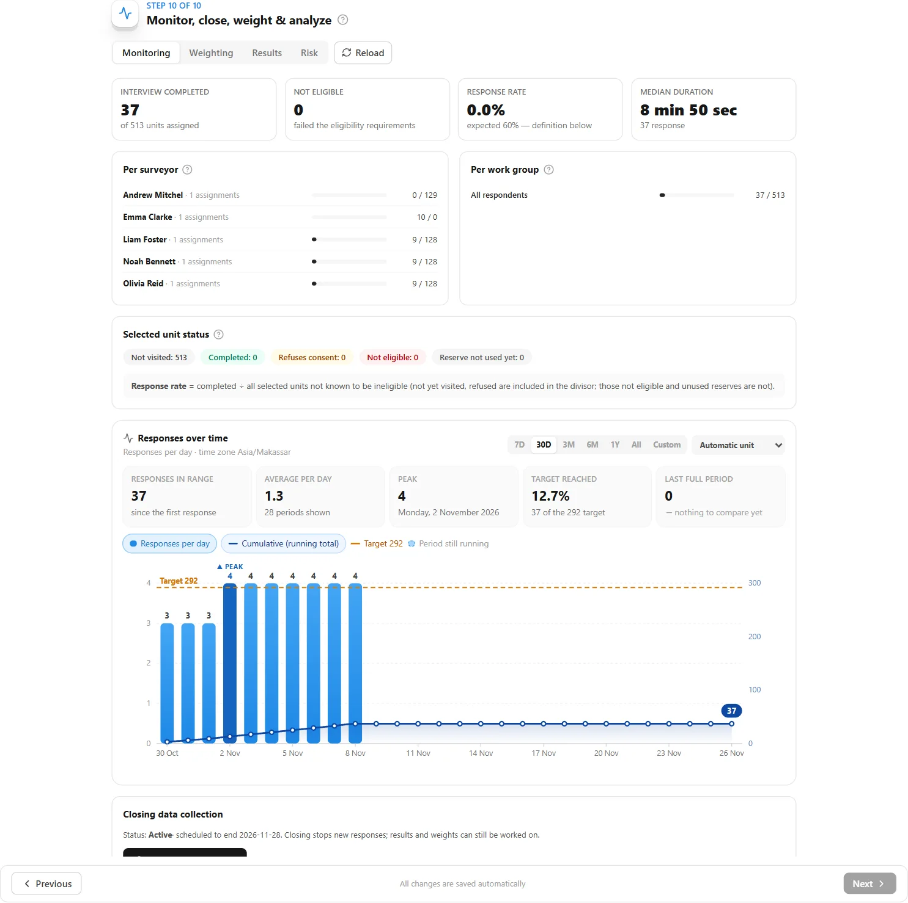
Dihitung per unit sampel, dengan gaya AAPOR RR1 yang konservatif: unit yang tak pernah terjangkau dihitung memenuhi syarat, jawaban sebagian dihitung sebagai nonrespons.
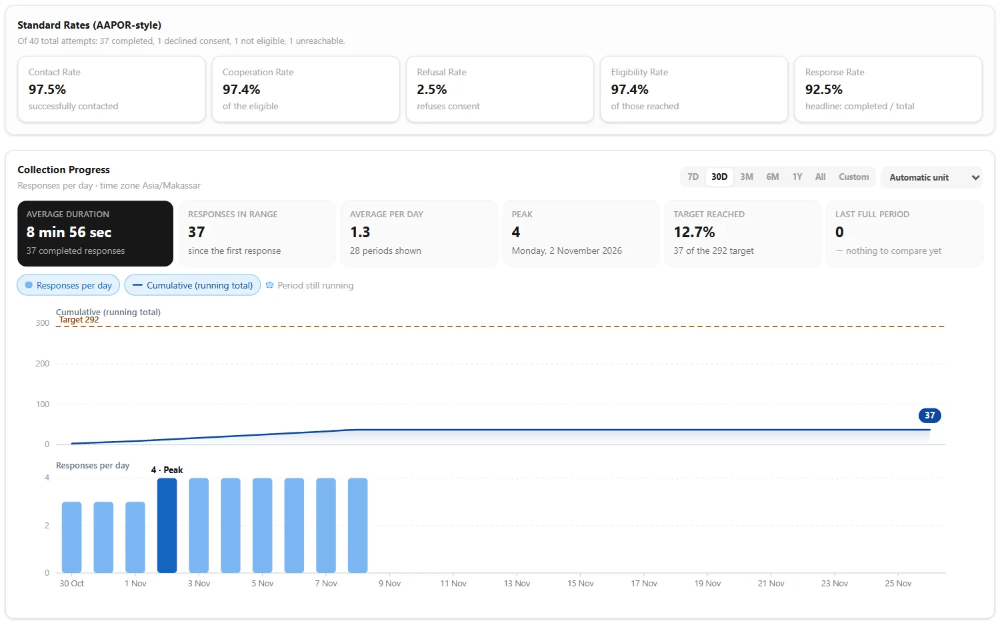
Setiap respons isian mandiri mendapat sinyal — kecepatan, kemiripan, pola jawaban, teks, pemeriksaannya sendiri — yang diberi bobot dan dibatasi per kelompok. Wawancara lapangan mendapat skor kecurigaan terpisah dari waktu, tempat, dan pola jawaban.
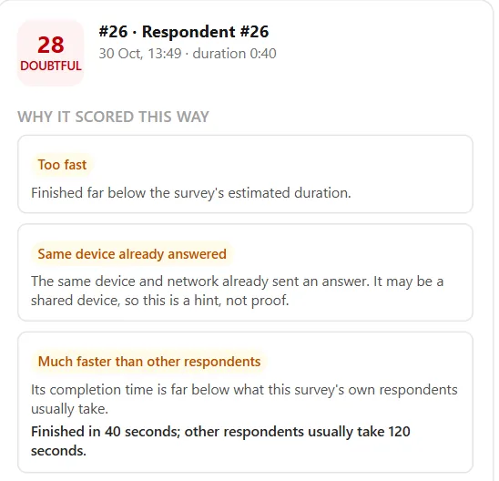
Uji t Welch untuk rata-rata, uji z dua proporsi untuk porsi, chi-square untuk tabulasi silang, Benjamini–Hochberg saat banyak uji berjalan bersamaan. Perubahan antar gelombang memakai effective sample size tiap gelombang.
Model tren teredam dengan pola hari dalam seminggu dicocokkan ke respons selesai per hari; sisa masa lapangan disimulasikan 1.500 kali dengan variasi harian, menghasilkan tanggal selesai beserta rentangnya.

Glosarium
Demo dengan kuesioner dan sampel Anda sendiri memakan waktu sekitar satu jam.